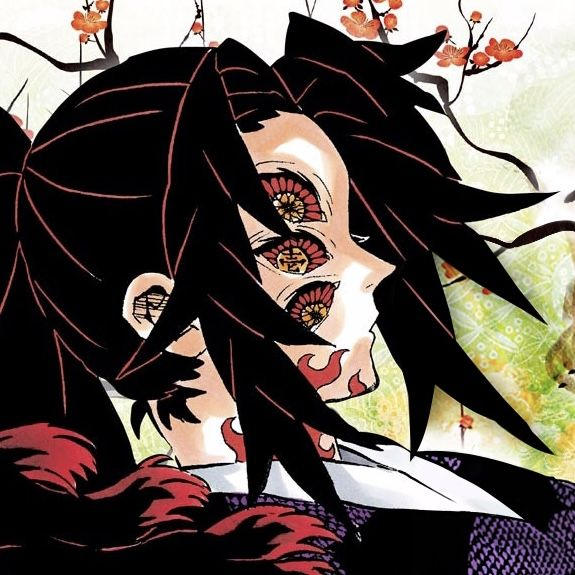

"I love BWAT."
Age:13
Birthday:March 3, 2013
Grade & Section:8-Copernicus
School:Lyceum-Northwestern University Francisco Q. Duque Medical Foundation Special Science High School
Address:Dagupan City, Pangasinan, Philippines
Favorite Food:Sinigang na Baboy
Favorite Color:Purple
Favorite Subject:Lunch
Dream Career:Nurse
Hello! My name is Anika Julia P. Ortega. I enjoy reading fluff manhwas, and going out with my family. When I grow up, I want to be a Nurse.